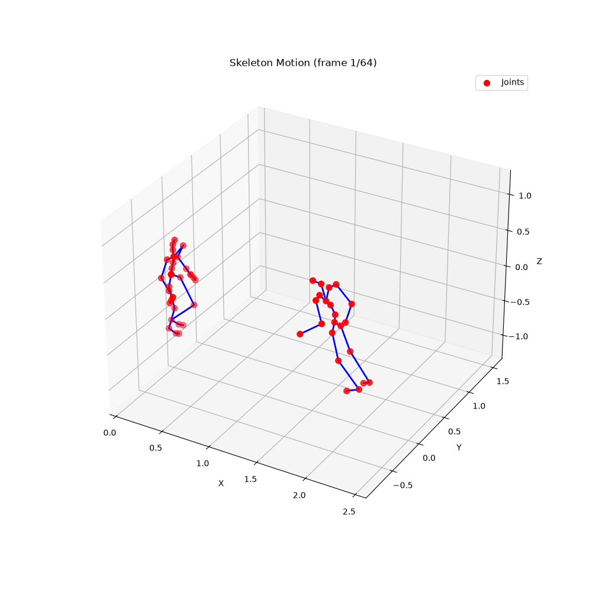

Generalizable Motion Retargeting Using Deep Skeletal Networks

Motion from a group B skeleton retargeted onto a group A skeleton.
Motivation
Retargeted motion data across arbitrary pairs of skeletal domains, without requiring a domain-specific mapping to be hand-authored for every new source/target skeleton pair.
Method
A deep skeletal network learns a shared motion representation that generalizes across differing joint topologies and proportions, allowing motion captured on one skeleton (e.g. a human actor) to be retargeted onto another (e.g. a simulated humanoid) while preserving the semantics and style of the original motion.